安装XinaA15
有多种方式去：
安装XinaA15的安装方式
（推荐）用TrollStore安装
- 用TrollStore安装XinaA15
- （推荐）方式1
- 下载XinaA15的ipa文件
- 把ipa文件传到iPhone中，用TrollStore打开（即可自动安装XinaA15）
- 方式2
- 直接从URL安装
- 步骤：TrollStore->右上角➕加号->Install from URL
- 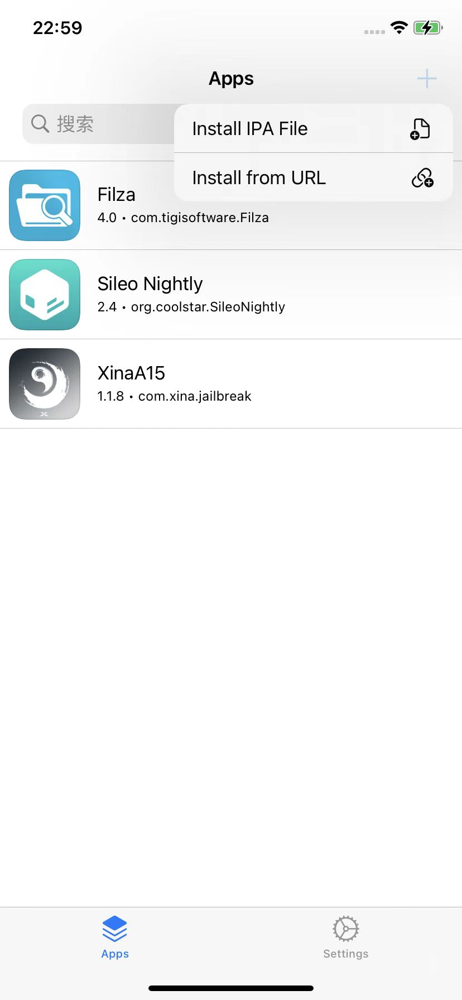
- 步骤：TrollStore->右上角➕加号->Install from URL
- 说明：自己没试过，应该可行
- 备注
- TrollStore在线安装URL地址
- 比如
- 最新版 1.1.8的：
apple-magnifier://install?url=http://apt.xina.vip/XinaA12.1.1.8.ipa
- 最新版 1.1.8的：
- 比如
- TrollStore在线安装URL地址
- 直接从URL安装
- （推荐）方式1
从Safari浏览器安装
- 从Safari浏览器安装
- 比如地址：
- 说明：自己没去试
- 估计即使可以安装，安装出来的也是旧版XinaA15，不是最新版本
- 所以也不太推荐此方式
- 估计即使可以安装，安装出来的也是旧版XinaA15，不是最新版本
通过SideLoadly安装
- 通过SideLoadly
- 图
- 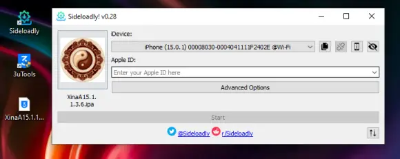
- 说明：自己没试过。估计可行
- 图
通过包管理器从源中安装
- 通过包管理器(Sileo等)直接添加XinaA15的源去安装
- XinaA15的源地址
- 说明：貌似不是最新版，所以不是很推荐这种方式
下载XinaA15的ipa再用TrollStore去安装
下面就对于前面提到的：
用TrollStore安装XinaA15 中的方式1，即：
- 下载XinaA15的ipa文件
- 把ipa文件传到iPhone中，用TrollStore打开（即可自动安装XinaA15）
进行详细介绍。
下载XinaA的ipa文件
- 下载XinaA的ipa文件
- 从官网 https://xina.ss03.cn/ 下载到最新版本的XinaA15的ipa文件
- 比如：1.1.8 的 http://apt.xina.vip/XinaA12.1.1.8.ipa
- 注意：此处直接下载没速度，最后改用迅雷，可以顺利下载
- 比如：1.1.8 的 http://apt.xina.vip/XinaA12.1.1.8.ipa
- 从官网 https://xina.ss03.cn/ 下载到最新版本的XinaA15的ipa文件
如何把XinaA15的ipa文件，传输到iPhone中
把XinaA15的ipa文件传输到iPhone中的多种方式
（推荐）用微信传输
- 支持场景：越狱前/越狱后
- 具体逻辑：Mac中和iPhone中都登录（同一账号的微信，或其他微信朋友，总之确保能传输文件）
- 步骤=效果
- 从Mac中把ipa传到微信中
- 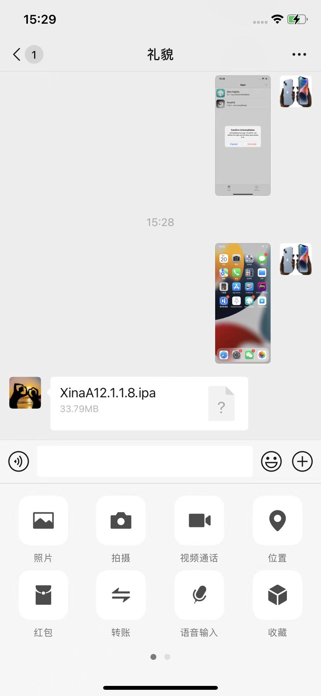
- 点击进入，点击：用其他应用打开
- 点击：
TrollStore- 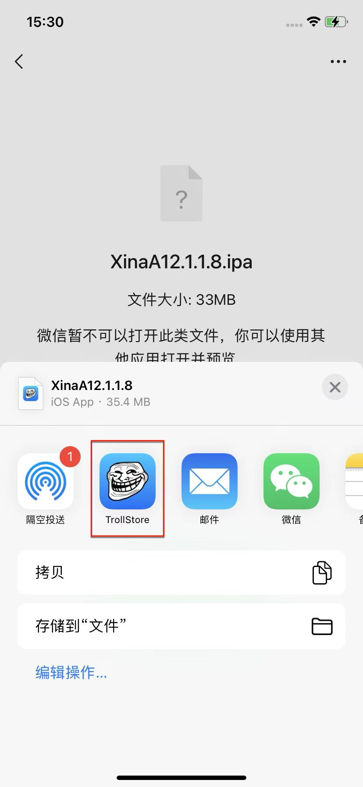
- 从Mac中把ipa传到微信中
通过AirDrop隔空投送传输tipa文件
- 支持场景：越狱前/越狱后
- 主要逻辑：把
.ipa改为.tipa，通过AirDrop=隔空投送发送到iPhone中，在用TrollStore打开 - 具体步骤
- 把之前的
.ipa文件改后缀为.tipa，然后通过AirDrop=隔空投送发送到iPhone中- 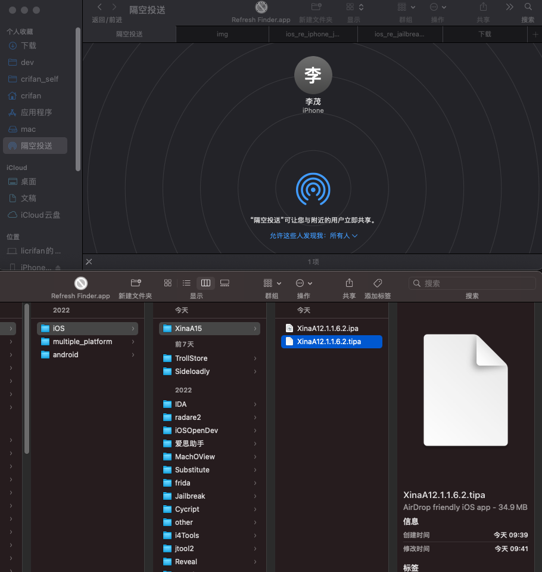
- iPhone中会自动出现弹框：打开方式，选择
TrollStore- 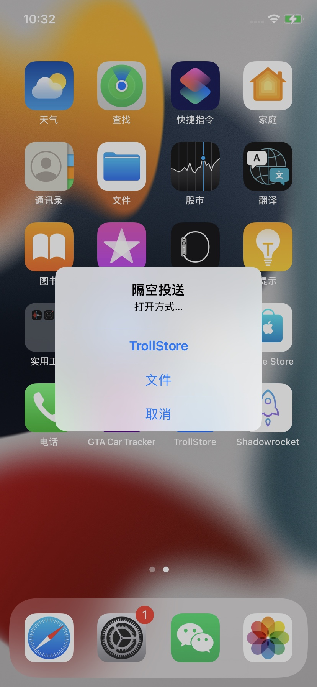
- 把之前的
- 额外说明：此处有点诡异的是，Mac直接传送ipa到iPhone，但最后始终无法顺利保存到此处的
iCloud中- 也就无法实现网上很多人说的，TrollStore从iCloud中安装ipa的方式了
通过scp拷贝到iPhone中，再用Filza去打开
- 支持场景：越狱后
- 步骤：
- 通过scp拷贝到iPhone中
scp -p XinaA12.1.1.6.2.ipa root@192.168.2.12:/var/root/dev/XinaA12.1.1.6.2.ipa
- 再用Filza去打开
- Filza中的XinaA15的ipa文件
- 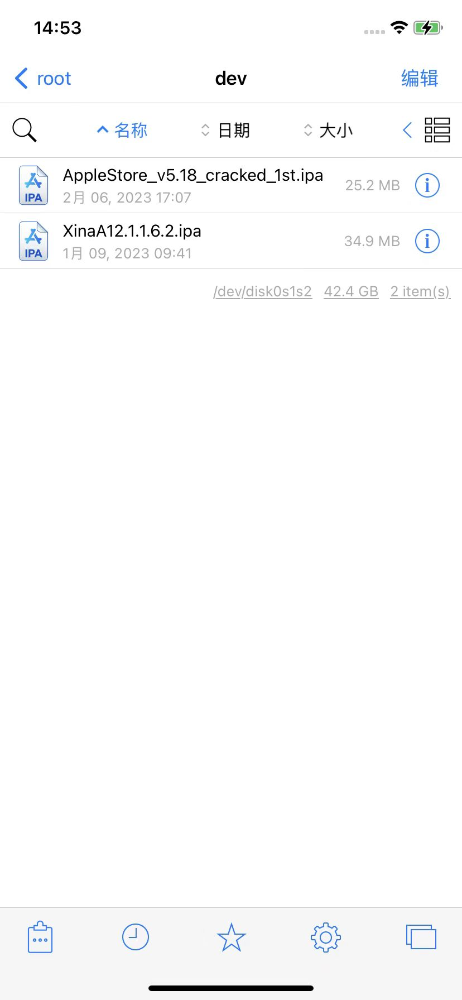
- 长按-》右键菜单
- 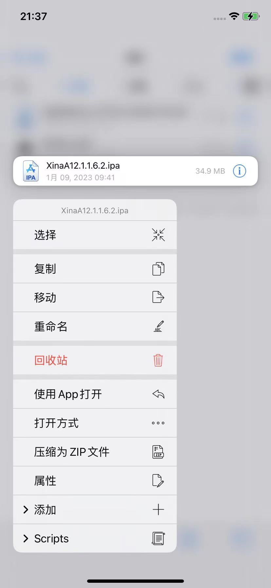
- 继续安装
- 方式1：选择
使用App打开-> 选择TrollStore- 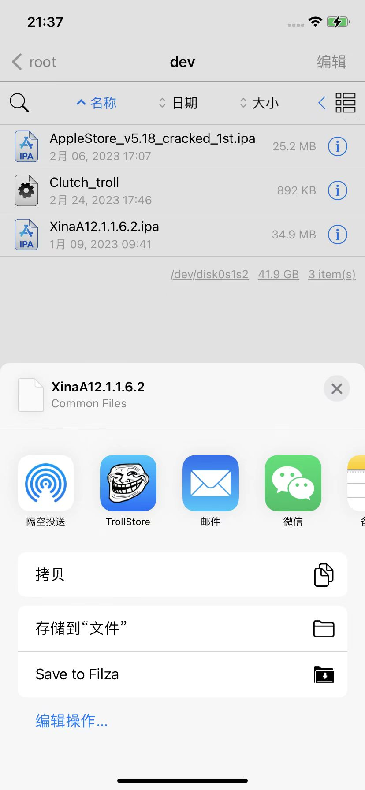
- 方式2：选择
打开方式-> 选择TrollStore- 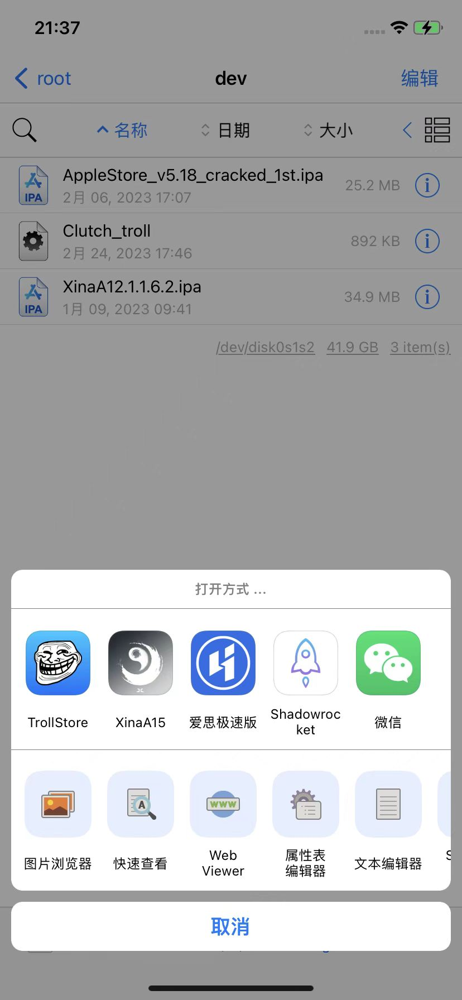
- 方式1：选择
- Filza中的XinaA15的ipa文件
- 通过scp拷贝到iPhone中
用TrollStore打开并自动安装XinaA15的ipa文件
- 前提：已把XinaA15的ipa文件，传输到iPhone中，且已选择用TrollStore去打开
- 后续步骤：用TrollStore打开XinaA15的ipa并自动安装的过程
- 会自动出现弹框，点击
Install- 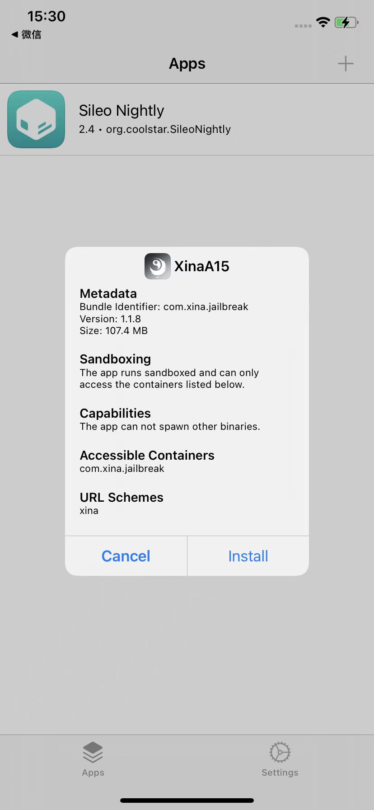
- 显示Installing
- 安装完毕后，即可在
Appstab页面中看到已安装的XinaA15- 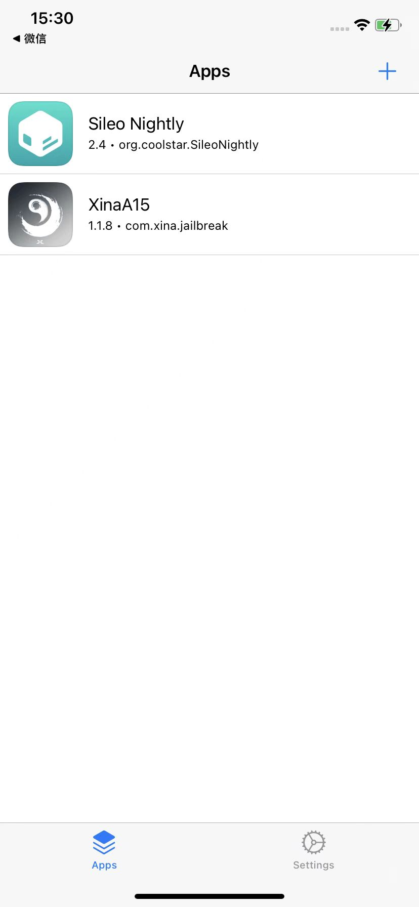
- 安装后的桌面出现XinaA15的图标了
- 会自动出现弹框，点击